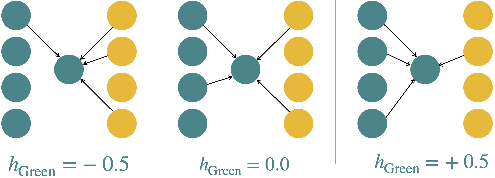
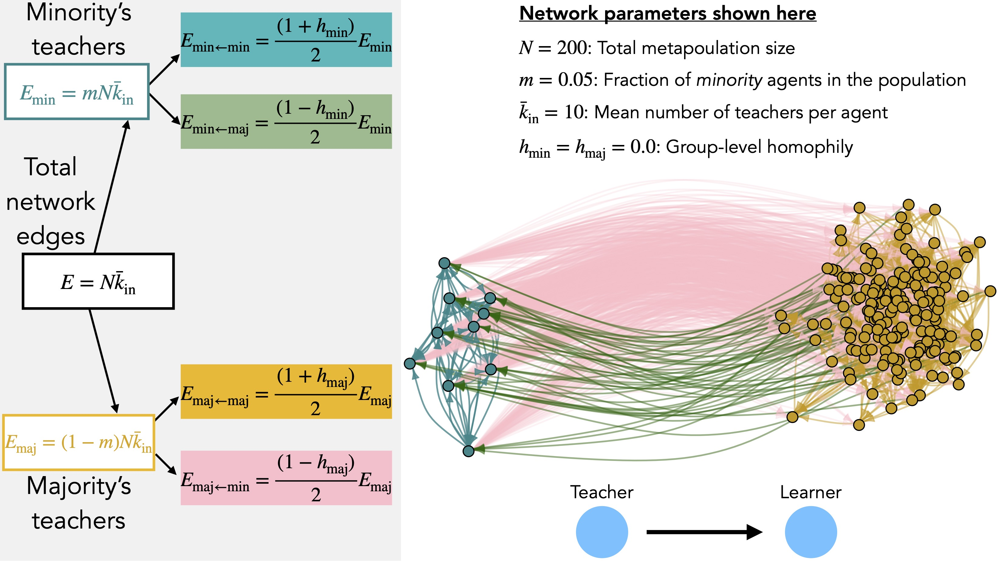

Intro
What do innovation in an online puzzle game (Derex and Boyd 2016; Moser and Smaldino 2023; Milzman and Moser 2023); health and weight loss interventions (Centola 2010a, 2011; Zhang and Centola 2019); the diffusion of ready-to-hand climate change adaptations (Jones, Ready, and Pisor 2021; Turner et al. 2023); prediction of HIV propagation through mutli-ethnic, urban social networks (Morris 1991); political polarization (Flache and Macy 2011; Turner and Smaldino 2018); and pro-democracy protest movements like the Arab Spring (Barberá et al. 2015; Steinert-Threlkeld 2017) all have in common? In all these cases, social network structure enabled more effective development and dissemination of collective intelligence (Centola 2022), potentially enabling more effective cultural adaptation (Galesic et al. 2023), but also sometimes amplifying problematic collective maladaptations in the case of polarization.
These examples show that network structure matters. However, these examples operationalize and quantify social network structure in different, idiosyncratic ways. It is therefore difficult to know whether the same network effects are at work in different study contexts. In turn, it is difficult to synthesize our scientific understanding of how network structure affects cultural adaptation in general. In this post I aim to synthesize two common approaches to quantifying social network structure observed to affect cultural adaptation: homophily (Kossinets and Watts 2009) and the degree of core-periphery structure in a network (Borgatti and Everett 1999; Priebe et al. 2019), which I dub core-peripheriness. I will first give brief introductions to the many possible definitions and operationalizations that exist for these two measures. Then to synthesize the two, I will fit a stochastic block model to social networks constructed using an algorithm I developed based on group-level homophily in the special case of a metapopulation (i.e., a population composed of sub-populations) composed of two groups.
This approach helps advance the social science of collective adaptation by initiating the development of a common framework for construction or measurement of social networks that could be used across formal, computational, and empirical studies. In this way we stop “playing twenty questions with nature” (Almaatouq et al. 2022) that happens when we have “twenty” (or more, or at least several) different ways of defining social network structure. A common framework can instead provide a foundation for new studies to build on. New studies can then multiply our knowledge instead of fracture it, as will continue to occur without a shared framework.
Asymmetric homophily-defined networks fit to stochastic block models
To begin to understand the connection between asymmetric homophily and core-peripheriness, I will first explain how to simulate minority-majority social networks using group-level asymmetric homophily, then demonstrate how to fit a stochastic block model network with two blocks to infer the core-peripheriness of networks with different homophily levels. I close the section with a brief analysis that compares core-peripheriness of networks produced with different asymmetric homophily values.
Asymmetric homophily-defined networks


Stochastic block model networks and core-peripheriness
The stochastic block model (SBM) uses probabilities of what we conceptualize as teacher-learner relationships between core and periphery to define the network. In SBM language, each group is a “block”. The log-odds probability of an edge from a node in group \(i\) to a node in group \(j\) is written \(B_{ij}\). With two groups, or “blocks”, there are thus four probabilities to define. To continue with the minority-majority framing from the asymmetric homophily model, we write these terms SBM connection probabilities as follows. \(B_{\mathrm{maj,maj}}\) is the connection probability among the core majority group; \(B_{\mathrm{min,maj}}\) is the probability of a minority member possibly teaches a majority member; \(B_{\mathrm{maj,min}}\) is the probability a majority member possibly teaches a minority member; and \(B_{\mathrm{min,min}}\) is the probability a minority member possibly teaches another minority member. To simplify notation and match other notation choices in the literature, we can call \(a=B_\mathrm{maj,maj}\), \(b = B_\mathrm{maj, min}\), \(c = B_\mathrm{min,maj}\), and \(d=B_\mathrm{min,min}\). These are then organized into the block matrix, \[ B = \begin{pmatrix} a & b \\ c & d \end{pmatrix}. \]
From this we can define a measure of core-peripheriness appropriate for our purposes, based on some approaches from the literature. For now we adapt the approach of Milzman and Moser (2023) who developed an agent-based model to better understand why participants in partially-connected groups outperformed participants in fully-connected groups in a cumulative cultural puzzle game in Derex and Boyd (2016). Milzman and Moser set \(b = c\) and use \(c\) in place of \(d\), but we will adapt their classifications to relax this assumption and assume that in general \(b \neq c\).
Milzman and Moser group core-peripheriness in one of three classes with fuzzy boundaries based on the relative values of the block connection probabilities. They adapt similar definitions in Priebe et al. (2019), who analyzed different spectral embedding methods, which is not irrelevant to our analysis, but is beyond the scope of this blog post. First, decentralized core-periphery structure has a densely-connected core but weakly connected periphery, and weak connectivity between the periphery and the core, i.e., \(a >> b,c,d\). Second, centralized core-periphery structure has more connections between the periphery and the core, but weak connectivity within the periphery, i.e., \(a,c,b >> d\). Finally, affinity structure has little core-periphery structure, and is dominated by within-group connections so that the diagonal elements of the block matrix dominate, i.e., \(a,d >> b,c\). As in our asymmetric homophily model, Milzman and Moser fix the total number of edges in the network, but vary \(a,b,c,d\) to create different networks that fall along the decentralized-centralized-affinity spectrum. They find that decentralized core-periphery structure optimizes cumulative cultural evolution in a simulated version of the experimental task in Derex and Boyd (2016).
For directed graphs, Elliott et al. (2020) provide the most thorough core-peripheriness measure, which they call core–periphery modularity, which “measures partition quality” . We will not use Elliot and co-authors definition exactly because their goal is to identify core-periphery structure, and there exist alternative measures which we build on below. First, just note that Elliot and co-authors generalize the now-classic treatment of core-periphery structure by Borgatti and Everett (1999), which only considered undirected graphs. Maximal core-peripheriness, according to Borgatti and Everett, is the situation where the core is fully connected, and every member of the periphery is connected to every core member, but not connected to any other periphery members. A future post may test Elliott and co-author’s core-periphery modularity for measuring core-peripheriness.
SBM parameters of asymmetric homophily-defined networks
We expect that when we create networks based on an agent-centric generative procedure then fit a